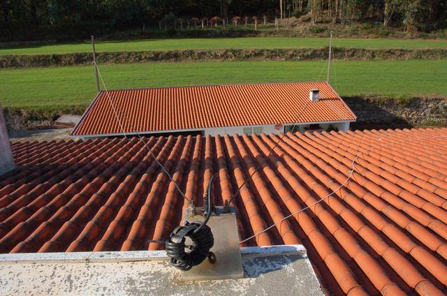
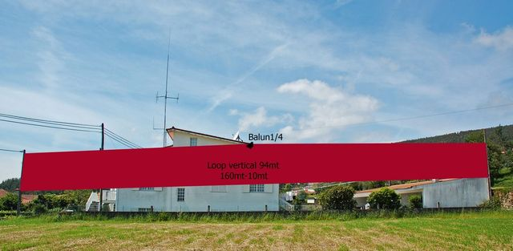
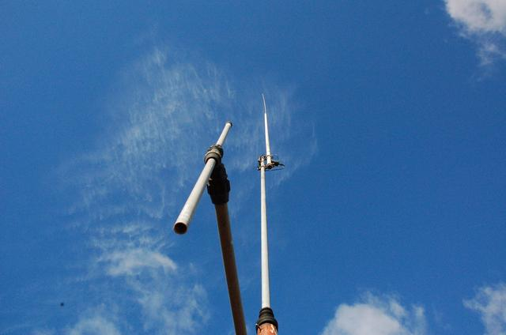
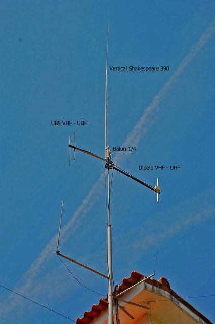
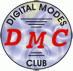

ESTAÇÃO
- QTH - IN51QN
- Rádio - Kenwood TS-570D Yaesu FT-8100 Yaesu FT-26
- Microfone MC-60.
- Antena Delta Loop Horizontal"Caseira +-77m" a 8m de altura, faço as bandas desde 160-10mt com o AT do rádio, 28m de cabo coaxial, tem uma escuta com menos estática.
- Antena Loop Vertical "Caseira 95m" a 3m de altura, faço as bandas desde 160-10mt com o AT do rádio, com 19.6m de cabo coaxial balun 1/4
- Antena Vertical Shakespeare 390 de fibra de vidro "tamanho 7m", não tem bobines é do tipo espiral, faço as bandas desde 160-10 com AT do rádio, com 21m de cabo coaxial.
#Antena DELTA LOOP 160-10mt home made
#Antena LOOP VERTICAL 160-10mt home made
#Dipolo VHF / UHF Vertical Shakespeare 390
#Dipolo VHF/UHF UB5 VHF/UHF Shakespeare 390


#DMC # 06163
Atualizada: